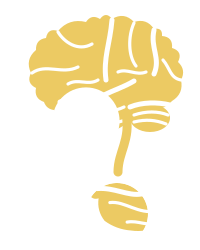

Εκδόσεις
Συγγραφή και έκδοση επιστημονικών και φιλοσοφικών συγγραμμάτων.

Το όραμά μας
Οι Νόες είναι μια επιστημονική και φιλοσοφική πρωτοβουλία που φιλοδοξεί να κλείσει την απόσταση ανάμεσα στην ακαδημαϊκή έρευνα και την κοινωνία.
Η επιστήμη και η φιλοσοφία δεν πρέπει να μένουν κλεισμένες στα πανεπιστήμια. Προσφέρουμε τα κατάλληλα εργαλεία ώστε ο καθένας να τις προσεγγίσει στο πραγματικό τους βάθος — χωρίς να τις υπεραπλουστεύουμε.
Συγγραφή και έκδοση επιστημονικών και φιλοσοφικών συγγραμμάτων.
Διαδραστικά και δια ζώσης σεμινάρια επιστήμης και φιλοσοφίας για όλους.
Το Theodoni Lab, σεμινάρια και ερευνητική καθοδήγηση για φοιτητές και ανεξάρτητους ερευνητές.
Γνωσιακή νευροεπιστήμη για ιδιώτες και εταιρίες: ιδιωτικές συναντήσεις, εκπαίδευση, επιστημονική υποστήριξη.
Ανεξάρτητο, μη κερδοσκοπικό διαδικτυακό ραδιόφωνο: όλο το 24ωρο, λόγος, μουσική και διάλογοι για τη γυναικεία χειραφέτηση και την αποδόμηση της πατριαρχίας.
femme-radio.gr ↗Φτιάξε προτάσεις από πλακίδια λέξεων: κινέζικα, νέα και αρχαία ελληνικά.
Δες τις γλώσσες →